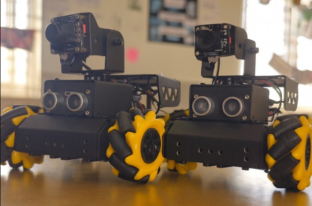
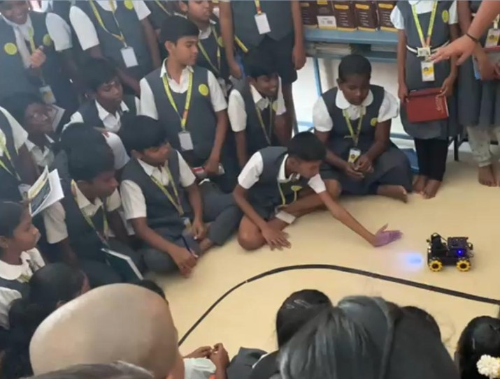

Product Description
The Rover is feature-rich that is powered by Raspberry Pi and integrated with ROS2, it provides powerful capabilities like computer vision, object recognition, and autonomous navigation. With a Mecanum-wheel chassis, HD camera, and dual-controller architecture, it is built for flexibility, adaptability, and advanced experimentation.
It includes a variety of sensors and components, including:
- Ultrasonic Sensors: For distance measurement and obstacle avoidance
- IR Sensors: Used for line following and edge detection
- Wide-Angle HD Camera: For facial and object recognition, gesture and emotion detection
- Servo Motors: Dual-axis pan-tilt for 360° camera motion
What Can the Rover Do?
- Face Recognition and Following: Identifies and tracks human faces using computer vision, moving along with the detected person.
- Color Recognition: Detects specific colors and performs programmed tasks based on the identified color.
- Hand Gesture Commands: Recognizes hand gestures and triggers corresponding commands for control or interaction.
- Line Following and Light Following: Uses line sensors and camera-based light tracking to follow lines or move toward light sources.
- Obstacle Avoidance: Prevents collisions by detecting and navigating around obstacles using onboard sensors.
- Object Tracking: Follows a designated object by identifying it visually and adjusting its path in real-time.
- Emotion Detection: Analyzes facial expressions to detect emotions and responds with predefined actions based on the emotion detected.
